BLoque 1
Creation to partition
if you want to use GUI like as an administrate linux. first of all we need know how can we create a new partition in our computer. there are 4 ways to create a new partition.
- Primary
- Extendida
- Logic
podemos tener 4 particiones primarias en nuestro disco duro, en nuestro disco extendido podemos crear las particiones logicas, o tambien podemos crearlas en nuestro disco extendido, pero lo recomendable es crear en una particion primaria las logicas para que podamos insertar un segundo sistema operativo. the system files we can need it to put other opartive system, for example if you wanna create a spacio with 2 OS, we’ll need made one primary partition, and inside this partition we can put our new OS. To linux our files system will be EXT3 Or EXT4 now, we’ll procees to create a new partition, on, windows like a commond mode.
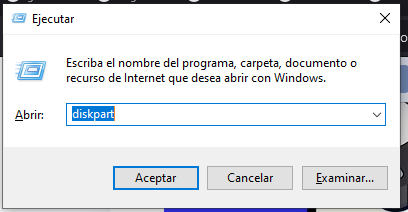we need to open a new windows like ejecutar mode, and write down the next it.
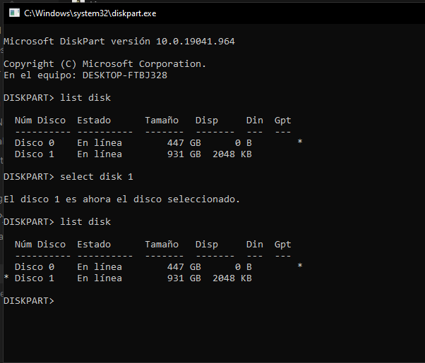we can write dowm the next. list disk, to work to know when disk there are. select disk # to select one disk to work. once again list disk to confirm our disk is select rigth.
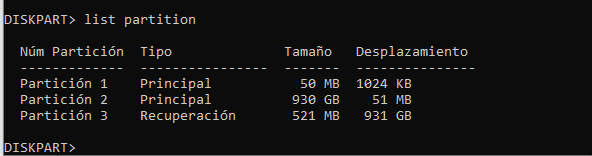to see all partition in our disk, we can put the next command. list partition si tienes un problema similar al de usa chkdisk para reparar el disco debes de colocar el siguiente comando chkdisk letradisco: /f esto lo que hará sera reparar las unidades del disco duro. Para crearlo de forma mas rapida podemos proceder a crearlo desde el administrador grafico, entrando al administrador de disco dando click derecho en el boton de windows y luego creando su particion de manera simple. el resultado deberia salirnos algo similar a esto.
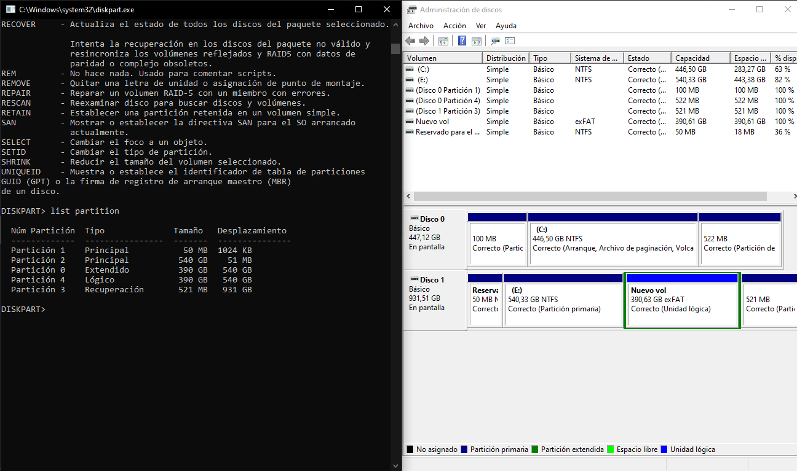
Bloque 2
Instalación de Linux en windows
Una vez creada nuestra partición, lo siguiente que haremos sera bootear una memoria con el sistema operativo que queramos, en este caso será Ubuntu 18 en modo grafico o GUI. Para ello reiniciaremos el sistema con nuestra memoria ya booteada dentro de ella y lo siguiente que procederemos a hacer es elegir la tecla esc lo cual nos brindará el menu de opciones. en dicho menu colocamos la opción arranque desde la USB, y procedemos con la instalación, siempre y cuando recordemos cual es nuestra partición que creamos en el capitulo anterior.
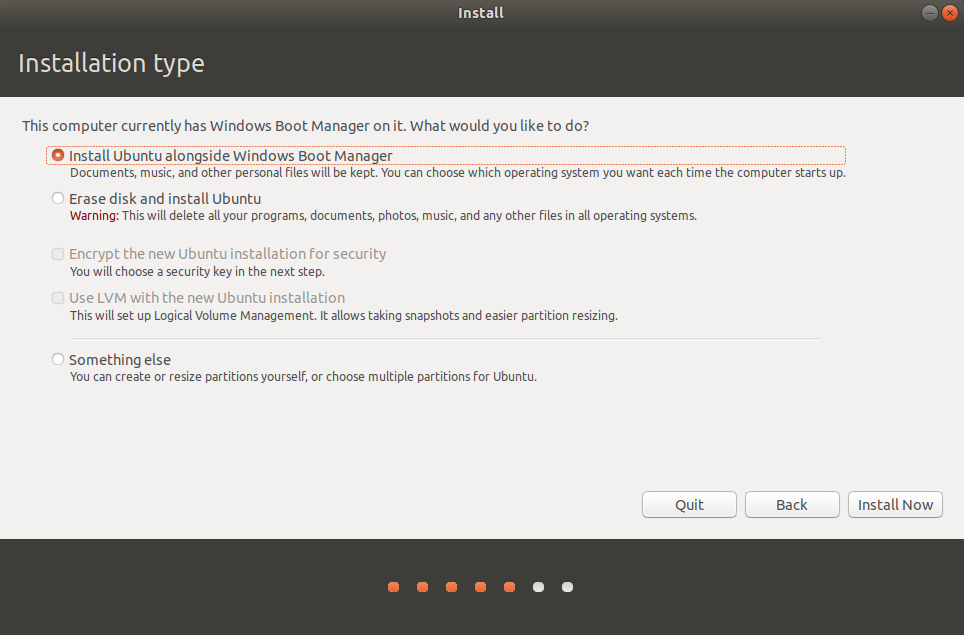Como podemos observar nos da la opcion de instalar ubuntu junto a windows y la de algo mas que nos permite elegir nuestro disco duro creado.
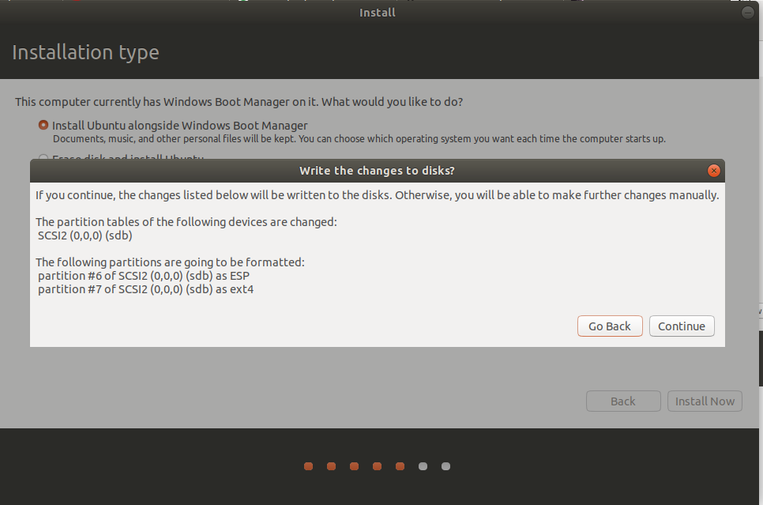Nos brindara la opcion para el formateo de los discos o particiones que crean conveniente. Luego el proceso es el mismo como si fueramos a instalar una maquina virtual
Bloque 3
Comandos basicos
Listar Archivos
Ls: Sirve para listar el contenido de una carpeta. ls NameFile sirve para listar el contenido de una carpeta especifica.
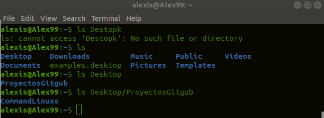Por ejemplo si tenemos una carpeta dentro de otra podremos ver su contendido siempre y cuando coloquemos la ruta completa. ls -l sirve para ver los comandos con sus respectivos permisos, estos seran drwxr los cuales se explicaran en una seccion posterior. ls -r sirve para mirar los archivos contrario al alfabeto es decir de Z a A.
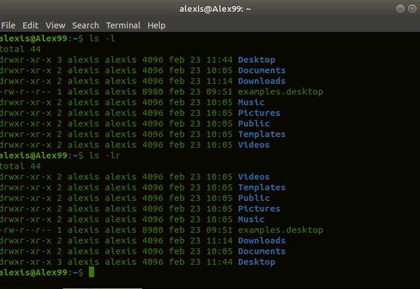Como podemos observar tambien podemos hacer agrupaciones, es decir combinar comandos para que este resultado sea mas factible de aquello que queramos, como podemos ver a continuacion.
Ruta De Archivos
para conocer donde nos encontramos actualmente es necesario el comando pwd, este comando nos permitira ver la ruta en la cual nos encontramos, con estos sera mas facil acceder a la ruta que queramos o movernos entre ellas.
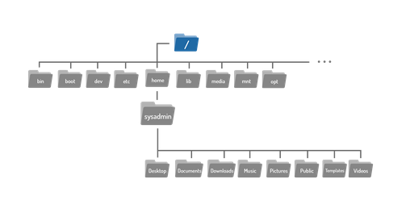antes que nada debemos recordar que la estructura de las carpetas en linux esta disenada con la estructura anterior, es decir en la parte principal se encuentran la estructura raiz, y dentro de esa estructura estaran ciertas carpetas que tendras configuraciones importantes para el sistema, como es el caso de la carpeta var en la cual se almacenaran las configuraciones de base de datos, o en la carpeta etc en la cual se encontraran configuraciones de red. a esta estructura se la conoce como estandar de jerarquia. si quieres conocer mas sobre la estructura de estas carpetas, puedes acceder a ella mediante el siguiente link. Estructura de Directorios
Acceso a las rutas de archivos
Como logramos observar nuestro sistema operativo linux esta dividido por rutas, las cuales podemos acceder mediante el sencillo comando cd. este comando indicara en que seccion yo quisiera estar, por ejemplo, si tenemos el fichero archivos dentro de la carpeta actual llamada home, debemos colocar el comando cd seguido del nombre de la carpeta a la cual queramos tener acceso. ejemplo.
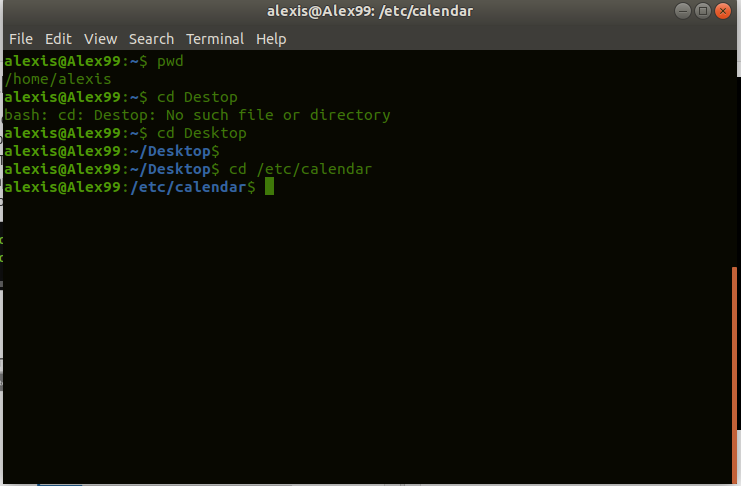Como podemos observar en el primer punto nos da la ruta en la cual nos encontramos actualmente,luego de ello utilizamos el comando cd para movernos al fichero Desktop que se encuentra dentro de esa ruta, una vez terminado ese proceso accederemos a una ruta que se encuentra un paso abajo de la raiz, la cual es /etc/calendar, la accedemos de la siguiente manera.
Ruta relativa cd Desktop
Ruta Adsoluta cd /etc/calendar
Tambien podemos llegar al inicio de la ruta o mejor conocida como ruta base, con el comando cd ..Listar Contenido Extra
muchas veces queremos listar el contenido de una carpeta que se encuentra dentro de 2 carpetas mas, es decir la ruta seria algo asi, carpetaprincipal/carpeta1/carpetamostrar en ese caso no necesariamente necesitaremos movernos con el comando cd, simplemente necesitaremos colocar ls mas el argumento que queramos, ya sea -l o -r o ambos combinados, y luego la ruta que queramos mostrar, tal cual como se vera en el siguiente ejemplo.
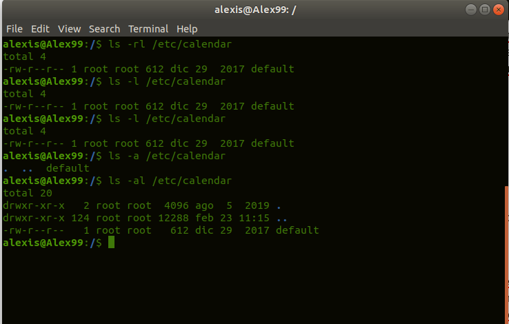como podemos observar tenemos muchas de dichas convinaciones establecidas aqui.
Bloque 4
Grupos y permisos
como podremos recordar el comando ls -l nos permite visualizar los ficheros con los respectivos permisos correspondientes, es decir de lectura, escritura, ejecucion, etc. ahora lo que veremos sera que significan esos permisos, a quienes estan dirigidos, y como podemos agregar, cambiar o eliminar alguno de esos permisos.
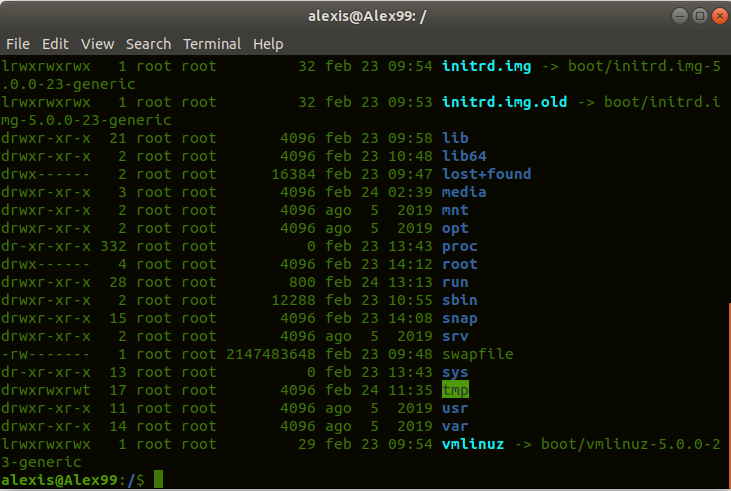como podemos observar hemos listado el contenido que se encuentra en la carpeta principal es decir en la raiz, la primera columna nos mostrara los permisos que estos tienen, estos se distinguen con la siguiente connotacion drwxr en la tercer columna podemos ver cual es el usuario que esta asignado a este fichero, como podemos observar es el usuario root, en la cuarta columna vemos a que grupo pertenece este usuario con su respectivo fichero.
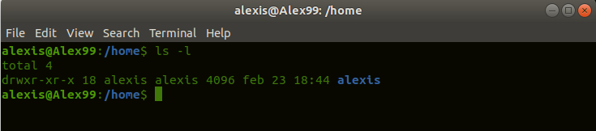Como podemos observar, ya hemos ingresado al directorio home, en el cual ya no nos aparecera que sus archivos pertenecen al usuario root y el grupo root, si no que cambian al usuario que tenemos por defecto logeado, y su respectivo grupo que por defecto es el mismo nombre del usuario .
Old Linux